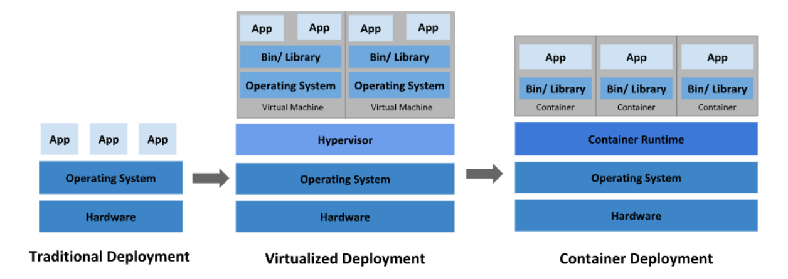
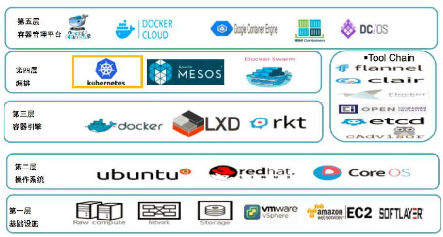
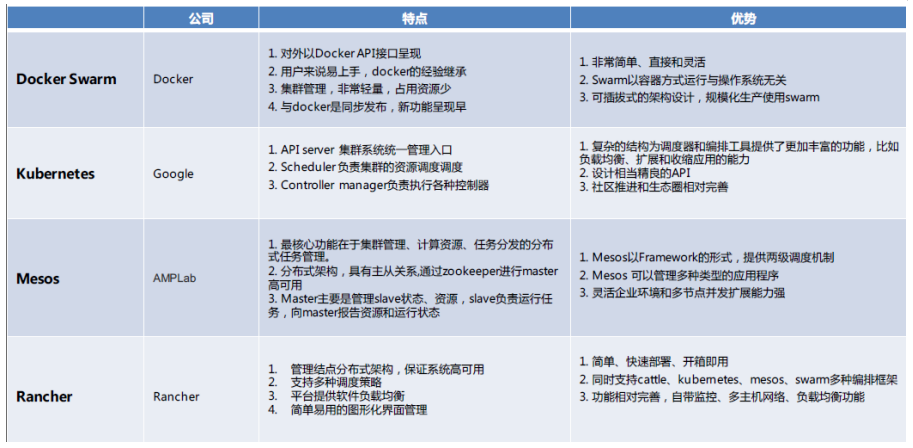
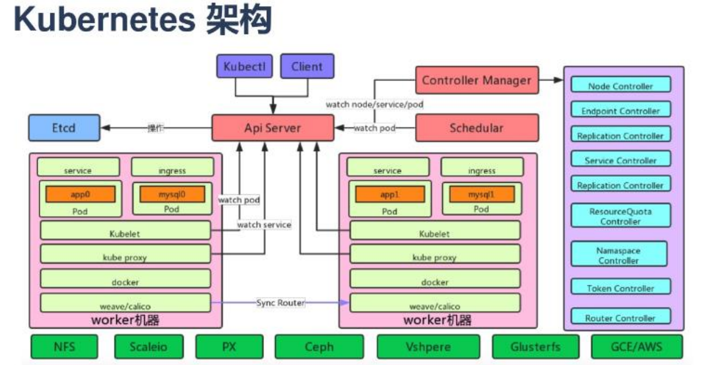
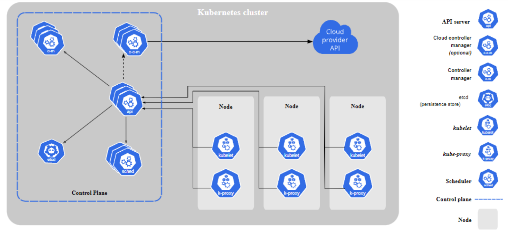
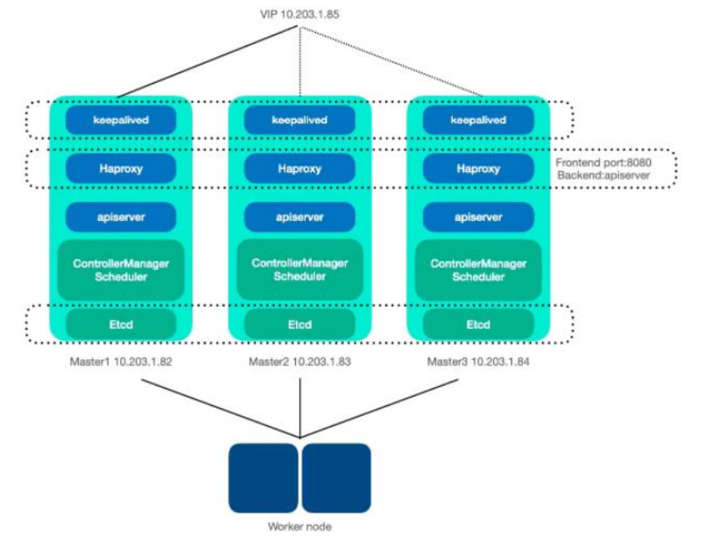
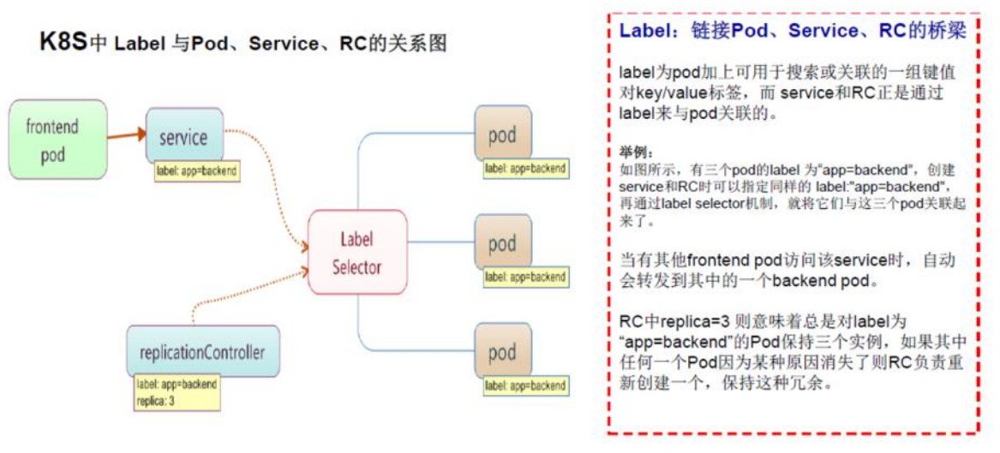
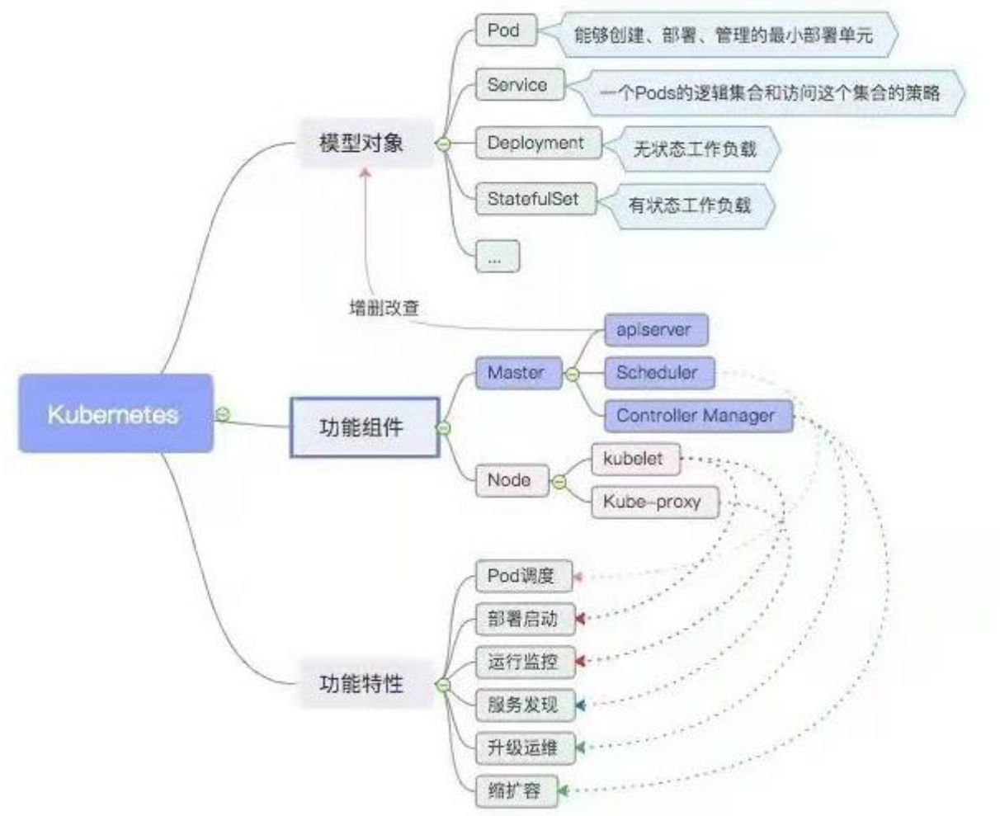

1 K8s 介绍
1.Kubernetes 是什么？

传统部署时代
早期，各个组织机构在物理服务器上运行应用程序。无法为物理服务器中的应用程序定义资 源边界，这会导致资源分配问题。 例如，如果在物理服务器上运行多个应用程序，则可能 会出现一个应用程序占用大部分资源的情况， 结果可能导致其他应用程序的性能下降。 一 种解决方案是在不同的物理服务器上运行每个应用程序，但是由于资源利用不足而无法扩 展， 并且维护许多物理服务器的成本很高。
虚拟化部署时代
作为解决方案，引入了虚拟化。虚拟化技术允许你在单个物理服务器的 CPU 上运行多个虚 拟机（VM）。 虚拟化允许应用程序在 VM 之间隔离，并提供一定程度的安全，因为一个应 用程序的信息 不能被另一应用程序随意访问。 虚拟化技术能够更好地利用物理服务器上的资源，并且因为可轻松地添加或更新应用程序而可以实现更好的可伸缩性，降低硬件成本等等。 每个 VM 是一台完整的计算机，在虚拟化硬件之上运行所有组件，包括其自己的操作系统。
容器部署时代
容器类似于 VM，但是它们具有被放宽的隔离属性，可以在应用程序之间共享操作系统（OS）。 因此，容器被认为是轻量级的。容器与 VM 类似，具有自己的文件系统、CPU、内存、进程 空间等。 由于它们与基础架构分离，因此可以跨云和 OS 发行版本进行移植。
容器因具有许多优势而变得流行起来。下面列出的是容器的一些好处：
- 敏捷应用程序的创建和部署：与使用 VM 镜像相比，提高了容器镜像创建的简便性 和效率。
- 持续开发、集成和部署：通过快速简单的回滚（由于镜像不可变性），支持可靠且频 繁的 容器镜像构建和部署。
- 关注开发与运维的分离：在构建/发布时而不是在部署时创建应用程序容器镜像， 从 而将应用程序与基础架构分离。
- 可观察性：不仅可以显示操作系统级别的信息和指标，还可以显示应用程序的运行状 况和其他指标信号。
- 跨开发、测试和生产的环境一致性：在便携式计算机上与在云中相同地运行。
- 跨云和操作系统发行版本的可移植性：可在 Ubuntu、RHEL、CoreOS、本地、 Google Kubernetes Engine 和其他任何地方运行。
- 以应用程序为中心的管理：提高抽象级别，从在虚拟硬件上运行 OS 到使用逻辑资 源在 OS 上运行应用程序。
- 松散耦合、分布式、弹性、解放的微服务：应用程序被分解成较小的独立部分， 并 且可以动态部署和管理 - 而不是在一台大型单机上整体运行。
- 资源隔离：可预测的应用程序性能。
- 资源利用：高效率和高密度。
容器是捆绑和运行应用程序的好方法。在生产环境中，您需要管理运行应用程序的容器并确 保没有停机时间。例如，如果一个容器发生故障，则另一个容器需要启动。如果这种行为由 系统处理会不会更容易？
2 为什么需要 Kubernetes，它能做什么?
服务发现和负载均衡
Kubernetes 可以使用 DNS 名称或自己的 IP 地址公开容器，如果进入容器的流量很大， Kubernetes 可以负载均衡并分配网络流量，从而使部署稳定。
自动部署和回滚
你可以使用 Kubernetes 描述已部署容器的所需状态，它可以以受控的速率将实际状态 更 改为期望状态。例如，你可以自动化 Kubernetes 来为你的部署创建新容器， 删除现有容 器并将它们的所有资源用于新容器。
自动完成装箱计算
Kubernetes 允许你指定每个容器所需 CPU 和内存（RAM）。 当容器指定了资源请求时， Kubernetes 可以做出更好的决策来管理容器的资源。
自我修复
Kubernetes 重新启动失败的容器、替换容器、杀死不响应用户定义的 运行状况检查的容器， 并且在准备好服务之前不将其通告给客户端。
密钥与配置管理
Kubernetes 允许你存储和管理敏感信息，例如密码、OAuth 令牌和 ssh 密钥。 你可以在 不重建容器镜像的情况下部署和更新密钥和应用程序配置，也无需在堆栈配置中暴露密钥。
弹性扩展
定义期待的容器状态与资源，K8S 自动检测、创建、删除实例和配置以满足要求。
存储编排
Kubernetes 允许你自动挂载你选择的存储系统，例如本地存储、公共云提供商等。
3 K8s 容器生态系统及容器编排技术对比


4 Kubernets 资源
中文社区 • https://www.kubernetes.org.cn/ • 官方网址 • https://kubernetes.io/
5 Kubernetes 版本进化
- 2014 年 6 月：谷歌宣布 kubernetes 开源。
- 2014 年 7 月：Mircrosoft、Red Hat、IBM、 Docker、 CoreOS、 Mesosphere 和 Saltstack 加入 kubernetes。
- 2014 年 8 月：Mesosphere 宣布将 kubernetes 作为 frame 整合到 mesosphere 生态系统中，用于 Docker 容器集群的调度、部署和管理 • 2014 年 8 月：VMware 加入 kubernetes 社区，
- 2014 年 11 月 ： HP 加入 kubernetes 社区。
- 2014 年 11 月：Google 容器引擎 Alpha 启动，谷歌宣布 GCE 中支持容器及服务，并 以 kubernetes 为构架。
- 2015 年 1 月：Google 和 Mirantis 及伙伴将 kubernetes 引入 OpenStack， 开发者可 以在 openstack 上部署运行 kubernetes 应用。
- 2015 年 4 月：Google 和 CoreOs 联合发布 Tectonic， 它将 kubernetes 和 CoreOS 软件栈整合在了一起。
- 2015 年 5 月： Intel 加入 kubernetes 社区，宣布将合作加速 Tectonic 软件栈的发展 进度。
- 2015 年 6 月：Google 容器引擎进入 beta 版。
- 2015 年 7 月：Google 正式加入 OpenStack 基金会，Kubernetes 的产品经理宣称将 把它容器计算的专家技术带入 OpenStack
- 2015 年 7 月：Kuberentes v1.0 正式发布。
- 2017 年 9 月 ： Kuberentes v1.8 正式发布
- 2017 年 12 月 ： Kuberentes v1.9 正式发布
- Current : Kuberentes 1.22
6 Kubernetes 概念


控制平面组件（Control Plane Components）
- apiserver：作为kubernetes系统的入口，封装了核心对象的增删改查操作，以RESTFul 接口方式提供给外部客户和内部组件调用。它维护的 REST 对象将持久化到 etcd（一 个分布式强一致性的 key/value 存储）。
- scheduler：负责集群的资源调度，为新建的 pod 分配机器。这部分工作分出来变成 一个组件，意味着可以很方便地替换成其他的调度器。
- controller-manager：负责执行各种控制器，目前有两类：
- endpoint-controller：定期关联 service 和 pod(关联信息由 endpoint 对象维 护)，保证 service 到 pod 的映射总是最新的。
- replication-controller ： 定 期 关 联 replicationController 和 pod ，保证 replicationController 定义的复制数量与实际运行 pod 的数量总是一致的。
Node 组件
- kubelet：负责管控 docker 容器，如启动/停止、监控运行状态等。它会定期从 etcd 获取分配到本机的 pod，并根据 pod 信息启动或停止相应的容器。同时，它也会接 收 apiserver 的 HTTP 请求，汇报 pod 的运行状态。
- proxy：负责为 pod 提供代理。它会定期从 etcd 获取所有的 service，并根据 service 信息创建代理。当某个客户 pod 要访问其他 pod 时，访问请求会经过本机 proxy 做 转发。
- Container Runtime – Docker enginee
插件（Addons）
- CoreDNS: Kube-DNS, CoreDNS
- Network Plugin : Flannel/calico
- Web 界面（仪表盘）:Dashboard 是 Kubernetes 集群的通用的、基于 Web 的用户 界面。 它使用户可以管理集群中运行的应用程序以及集群本身并进行故障排除。
- 容器资源监控： Heapster, Metrics-server
7 Kubernetes HA 集群

8 k8s 中 3 个重要概念
- Pod：是 Kubernetes 最基本的部署调度单元，可以包含 Container，逻辑上表示某种 应用的一个实例。比如一个 web 站点应用由前端、后端及数据库构建而成，这三个 组件将运行在各自的容器中，那么我们可以创建包含三个 Container 的 Pod。
- Service： 也是 Kubernetes 的基本操作单元，是真实应用服务的抽象，每一个服务 后面都有很多对应的容器来支持，通过 Proxy 的 port 和服务 selector 决定服务请求 传递给后端提供服务的容器，对外表现为一个单一访问接口，外部不需要了解后端 如何运行，这给扩展或维护后端带来很大的好处。
- ReplicationController：是 Pod 的复制抽象，用于解决 Pod 的扩容缩容问题。通常， 分布式应用为了性能或高可用性的考虑，需要复制多份资源，并且根据负载情况动 态伸缩。通过 ReplicationController，我们可以指定一个应用需要几份复制， Kubernetes 将为每份复制创建一个 Pod，并且保证实际运行 Pod 数量总是与该复制 数量相等(例如，当前某个 Pod 宕机时，自动创建新的 Pod 来替换)。

9 Kubernetes (k8s)编排调度框架



...
...
Copyright 2021 sunfy.top ALL Rights Reserved